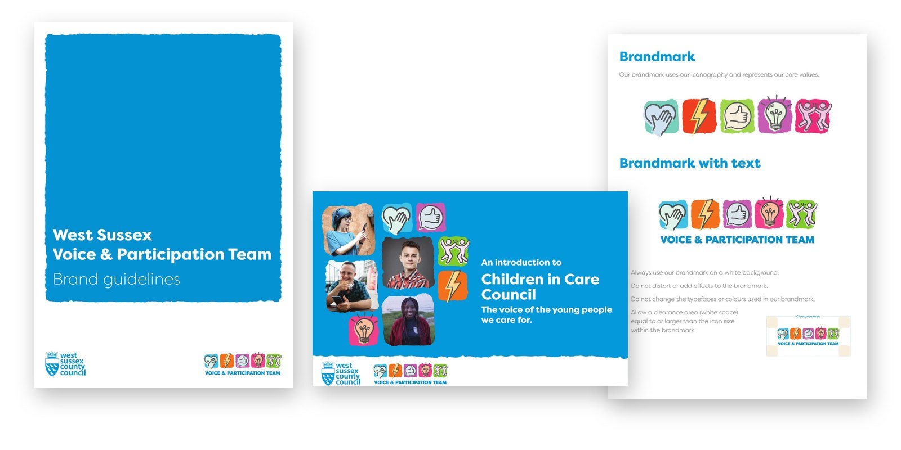
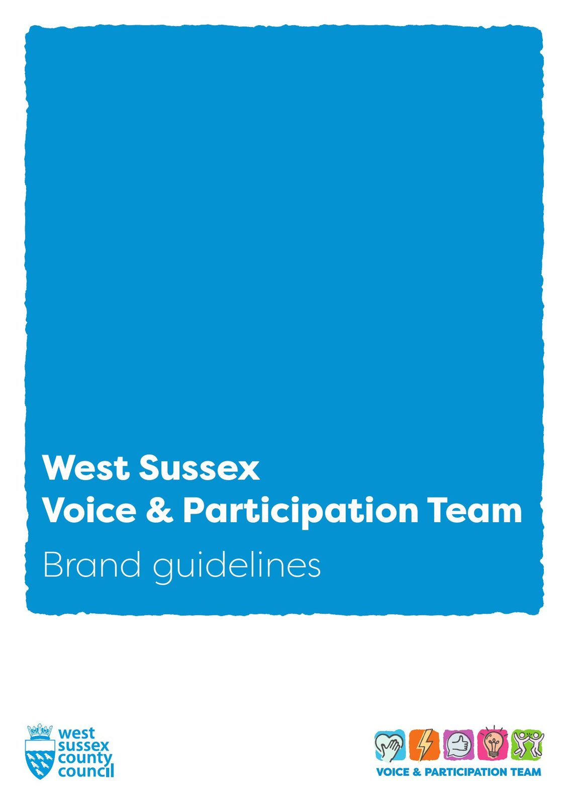
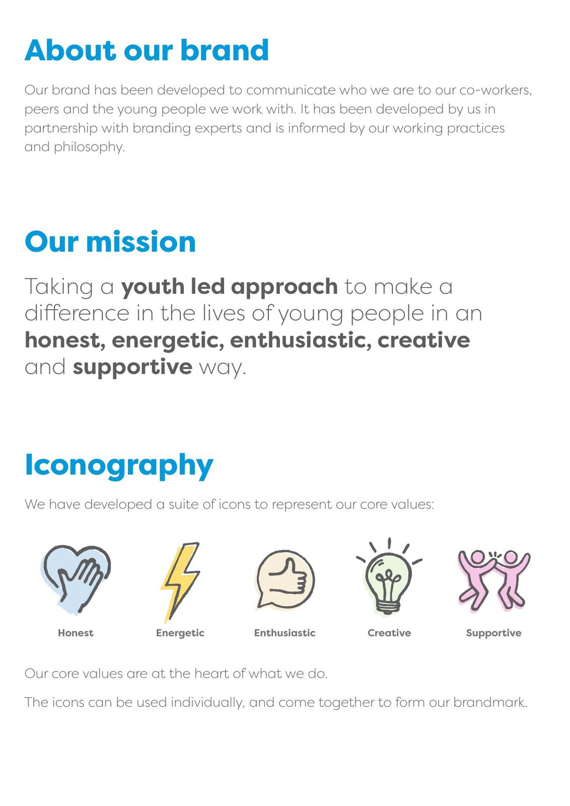
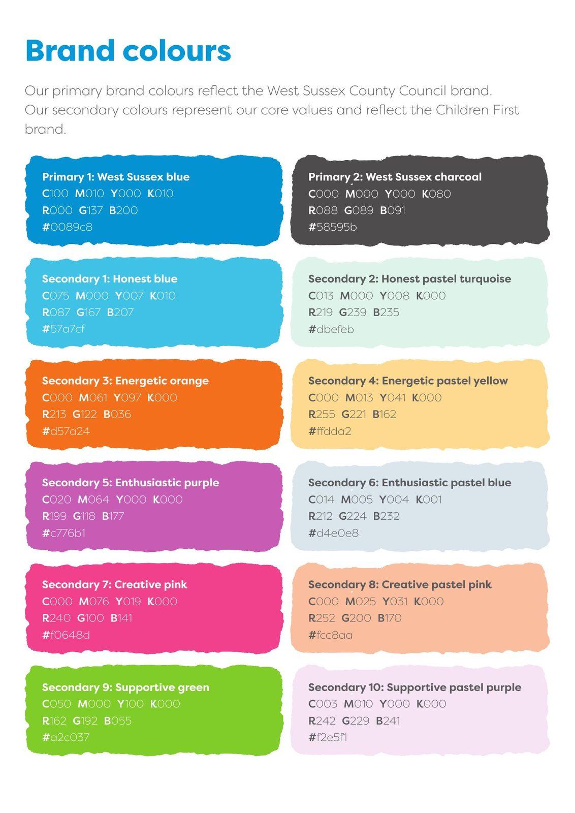
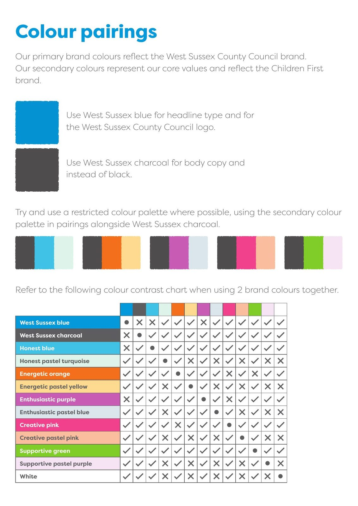
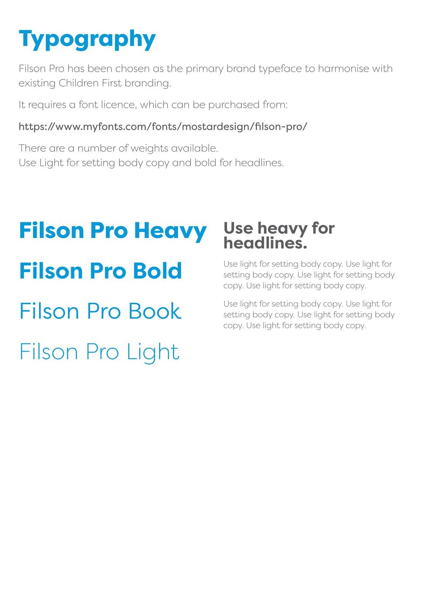
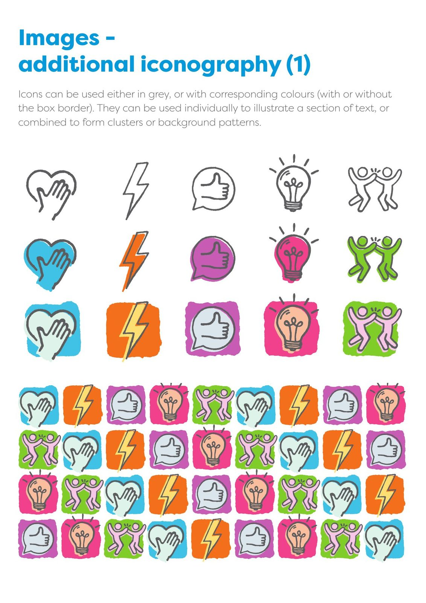
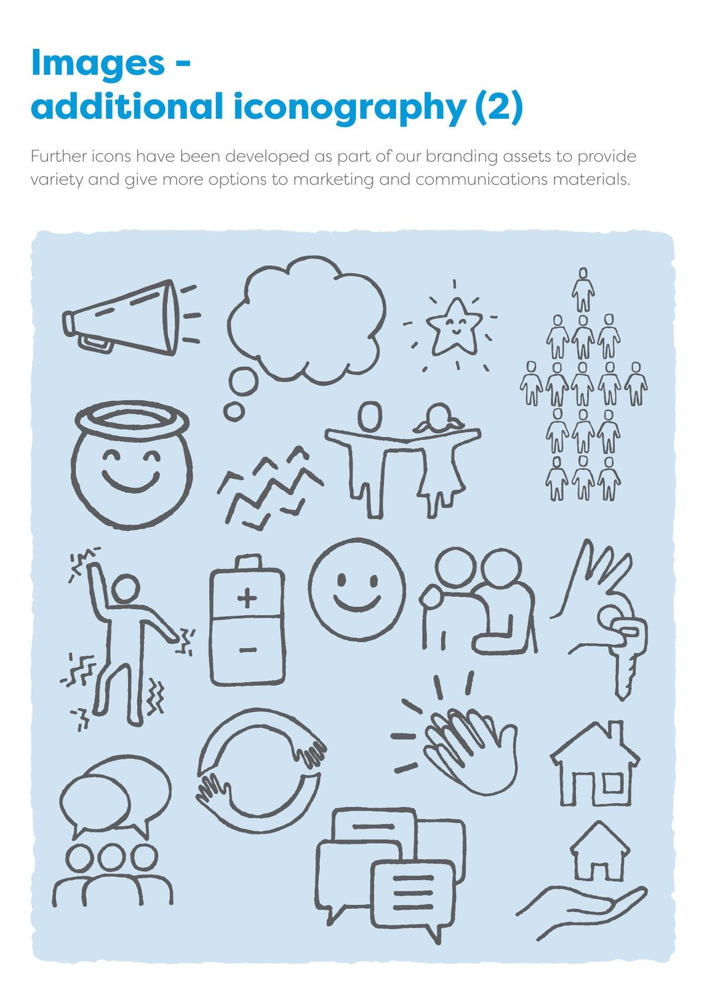
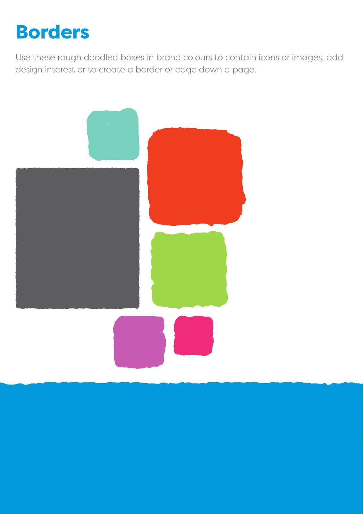
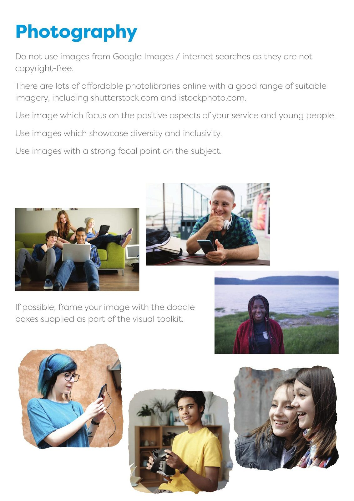

n
nWest Sussex County Council: a participation strategy, a new brand and a local offer for care leavers
West Sussex wanted every service, not just one team, to listen to children and young people. Over two years we helped write its participation strategy, rebrand its Voice and Participation Team, build a network of participation champions, and create a new local offer and website for care leavers.

The starting point
West Sussex had a Voice and Participation Team doing good work, but participation still sat with one team rather than the whole service. Children and young people had told the council they were tired of filling in survey after survey without hearing what happened next. And care leavers had no single, clear place to find out what they were entitled to.
What we did
- TrainingA Journey Through CareSix sessions for staff, June to July 2021
- StrategyWe listen; we share; we actThe Children and Young People’s Participation Strategy, signed off by the leadership team in April 2022
- BrandA new identity for the Voice and Participation TeamFive values, five icons and one brandmark, with full brand guidelines
- PeopleParticipation championsSenior leaders from across children’s services, with a champions bootcamp in August and September 2021
- CoachingWeekly coachingFor the team manager, to put the strategy into practice
- Local offerLeaving care: what next?A new local offer for care leavers across eight areas, following statutory guidance
- WebsiteThe local offer onlineAn accessible website for care leavers and staff, launched on 24 October 2022 in National Care Leavers Week
How we worked
Training and workshops were led by people with lived and professional experience of care. The strategy came out of six months of training, workshops and consultancy with staff, children and young people. We built the brand with the Voice and Participation Team in a series of workshops on their mission, logo, colours and imagery, and young people were consulted along the way. The local offer was co-produced with care leavers and personal advisers, and we broke the work into stages so the team always knew what came next.
What changed
A local offer the council is proud of, and others want.
Care leavers, staff and partners now have one clear place to find every right and entitlement, online and on any device.
“The Care Leaders have played a huge role in changing the culture to one of co-production and centralising the voices of young people.”
The participation strategy gave the whole service three pillars, six organisational challenges and five rules of engagement to work to, and participation champions now meet monthly. The team took the brand into everyday use, from its Canva brand kit to new merchandise. When the local offer launched, Councillor Jacquie Russell, Cabinet Member for Children and Young People, said: “We believe we now have one of the most comprehensive offers for care leavers in the country.”
What happened next
This work was the start of a longer partnership. We went on to develop West Sussex’s strategy on protected characteristics with children and young people in 2024 and 2025, and in 2026 started work on its care leaver hubs.
See the work
Open any piece to look through it page by page.
Five values, one brandmark
Each value has its own icon and colour. Together they make the brandmark. Choose one.
The five values
A heart and a hand, in honest blue.
A lightning bolt, in energetic orange.
A thumbs-up speech bubble, in enthusiastic purple.
A lightbulb, in creative pink.
Two people high-fiving, in supportive green.









Leaving care: what next?
One document that every part of the offer could be communicated from, written to the government’s guidance on what a local offer should include.
Co-produced
- Care leavers Shared what should be in the offer and how it should look
- Personal advisers Helped shape the content they use with young people every day
- Partners Supported the development of the offer
Built for every device
- Wireframe Agreed the structure before any design
- Templates Page designs signed off with the council
- Accessible Built to the WCAG 2.1 AA standard for public sector websites
- Handed over The team trained to update the content themselves
Launched in National Care Leavers Week
“We believe we now have one of the most comprehensive offers for care leavers in the country.” Councillor Jacquie Russell, Cabinet Member for Children and Young People
A Journey Through Care
Training led by people with lived and professional experience of care, following a child’s journey into, through and out of care.
Participation champions
A forum of senior leaders who find the participation opportunities in their own service areas and share them across the service.
- Bootcamp Mission, vision and purpose; developing opportunities; refining the youth participation offer
- Launch The new youth participation offer, September 2021
- Now Voice champions meet monthly
Weekly coaching
Coaching for the Voice and Participation Team Manager to put the strategy into practice and communicate it across the service.